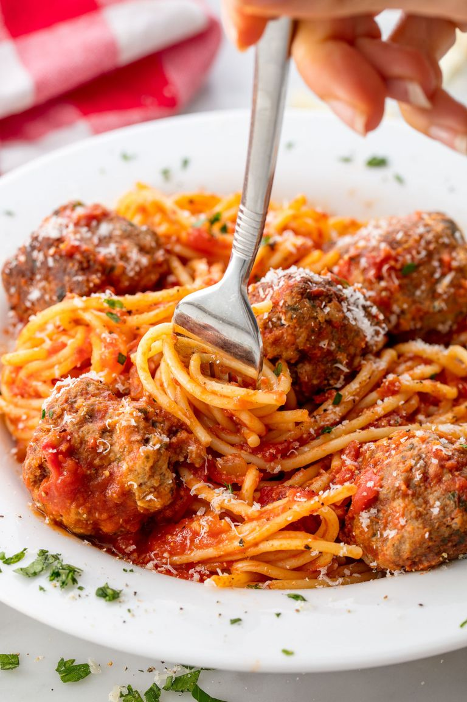

How to make yummy foods
French Toast

- Choose and slice your bread.
- Make the egg mixture
- Stuff the French toast (if you want to)
- Dip the bread in the egg mixture
- Fry the French toast
- Top the French toast with maple syrup (or anything you please)
Banna Bread

- Preheat the oven to 325 degrees F. Butter a 9 x 5 x 3 inch loaf pan.
- Cream the sugar and butter in a large mixing bowl until light and fluffy. Add the eggs one at a time, beating well after each addition.
- In a small bowl, mash the bananas with a fork. Mix in the milk and cinnamon. In another bowl, mix together the flour, baking powder, baking soda and salt.
- Add the banana mixture to the creamed mixture and stir until combined. Add dry ingredients, mixing just until flour disappears.
- Pour batter into prepared pan and bake 1 hour to 1 hour 10 minutes, until a toothpick inserted in the center comes out clean. Set aside to cool on a rack for 15 minutes. Remove bread from pan, invert onto rack and cool completely before slicing.
- Spread slices with honey or serve with ice cream.
Spaghetti and meatballs

- In a large pot of boiling salted water, cook spaghetti according to package instructions. Drain.
- In a large bowl, combine beef with bread crumbs, parsley, Parmesan, egg, garlic, 1 teaspoon salt, and red pepper flakes. Mix until just combined then form into 16 balls.
- Stuff the French toast (if you want to)
- In a large pot over medium heat, heat oil. Add meatballs and cook, turning occasionally, until browned on all sides, about 10 minutes. Transfer meatballs to a plate.
- Add onion to pot and cook until soft, 5 minutes. Add crushed tomatoes and bay leaf. Season with salt and pepper and bring to a simmer. Return meatballs to pot and cover. Simmer until sauce has thickened, 8 to 10 minutes.
- Serve pasta with a healthy scoop of meatballs and sauce. Top with Parmesan before serving.